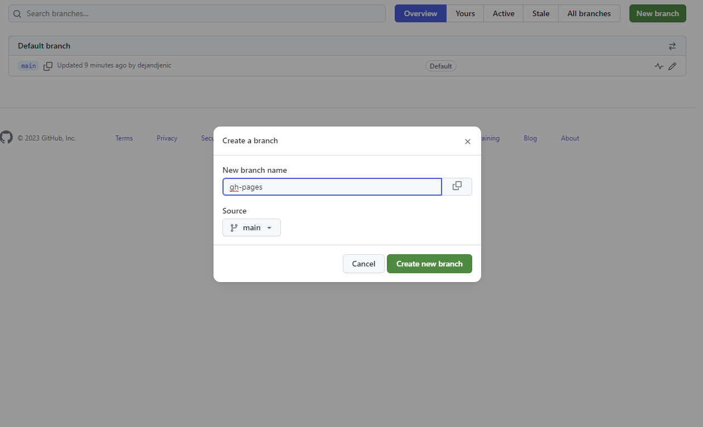
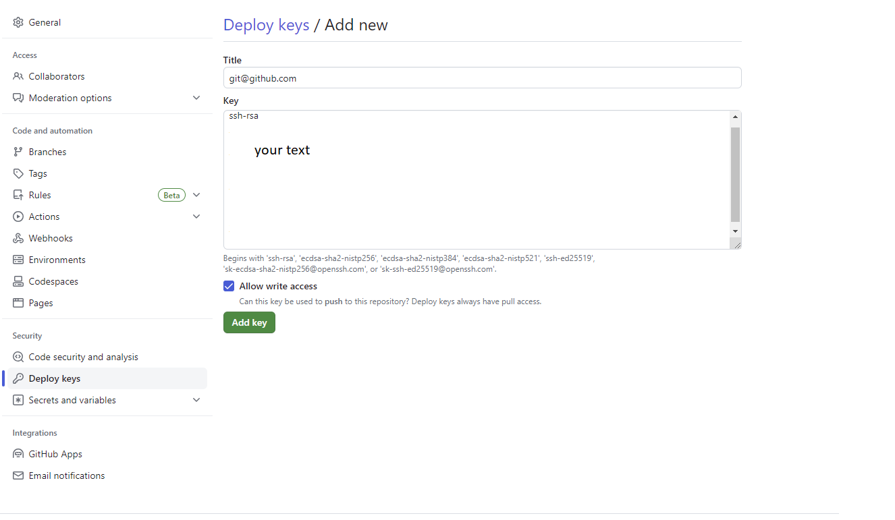
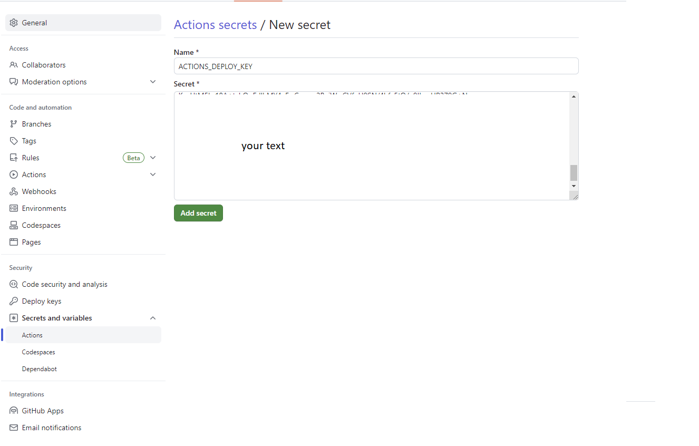
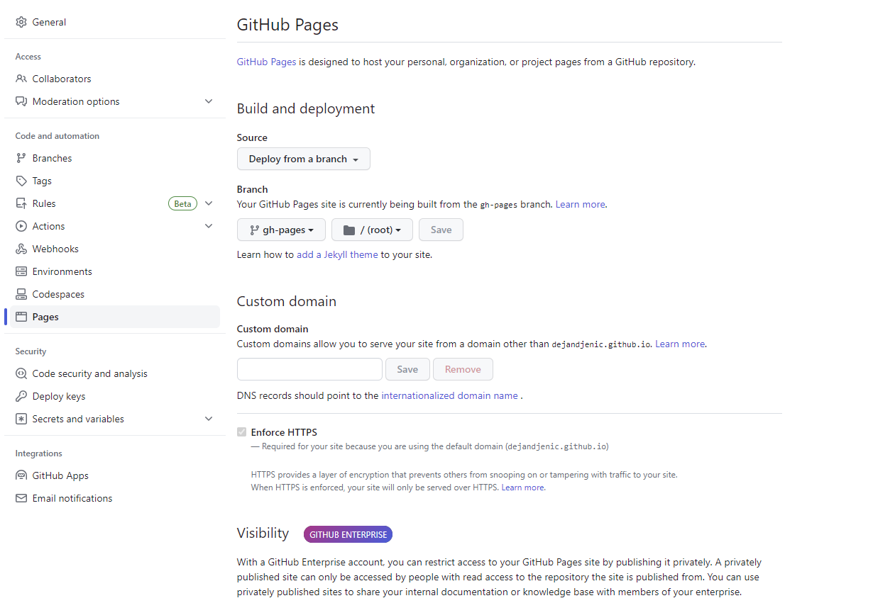
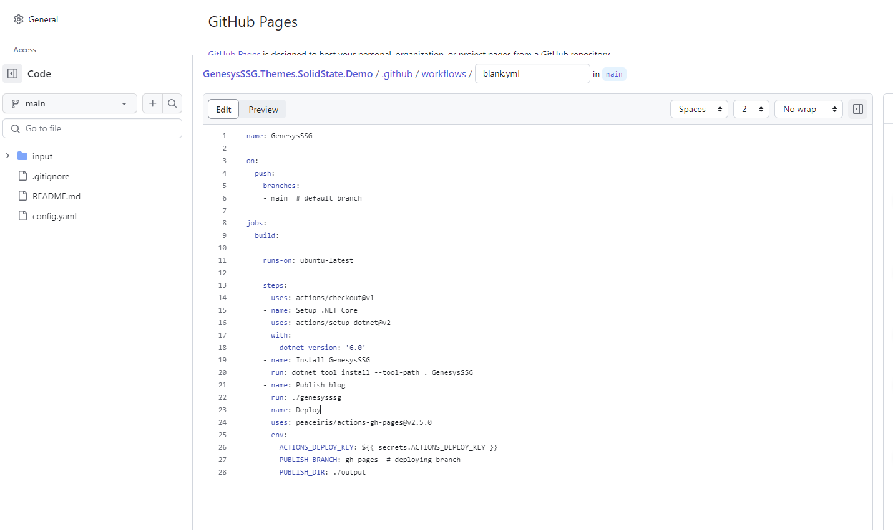
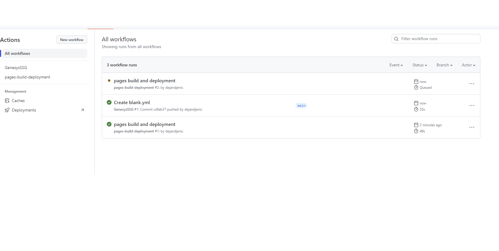

Posted on Thursday, 22 June 2023
introduction github github pages personal blogNavigate to github and create repository in the following format username.github.io
create branch calld gh-pages that will be used to server generated content.

execute following command to generate keys used to allow github to deploy code to new branch
ssh-keygen -t rsa -b 4096 -C "git@github.com"
this command will generate 2 files
navigate to settings of your repository on github and add new deploy key , as shown bellow

the value that should be entered is the value taken from the private key file.
navigate to Secrets and variables

the value that should be entered is the value taken from the public key file.
Navigate to pages section and ensure that settings are configured as shown

Clone your repository into local directory and navigate to it.
Install GenesysSSG
dotnet tool install -g GenesysSSG
generate new site with genesysSSG
genesysssg -n
add new blog item
genesysssg -b "First blog"
open directory with text editor like VS Code
code .
edit blogs/firstblog.md
if you want to see generated content run
genesysssg -w -s
when finished push code to git remote
navigate to actions and add new manual action

paste content into new action field
name: GenesysSSG
on:
push:
branches:
- main # default branch
jobs:
build:
runs-on: ubuntu-latest
steps:
- uses: actions/checkout@v1
- name: Setup .NET Core
uses: actions/setup-dotnet@v2
with:
dotnet-version: '6.0'
- name: Install GenesysSSG
run: dotnet tool install --tool-path . GenesysSSG
- name: Publish blog
run: ./genesysssg
- name: Deploy
uses: peaceiris/actions-gh-pages@v2.5.0
env:
ACTIONS_DEPLOY_KEY: ${{ secrets.ACTIONS_DEPLOY_KEY }}
PUBLISH_BRANCH: gh-pages # deploying branch
PUBLISH_DIR: ./output
save and commit
this will checkout your code, install and run genesysSSG on commit to main and publish results to gh-pages branch
after commit action will be run

navigate your browser to username.github.io and verify that your content is published